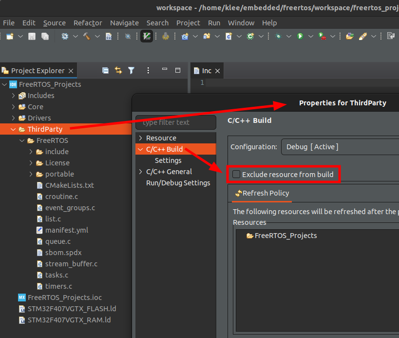
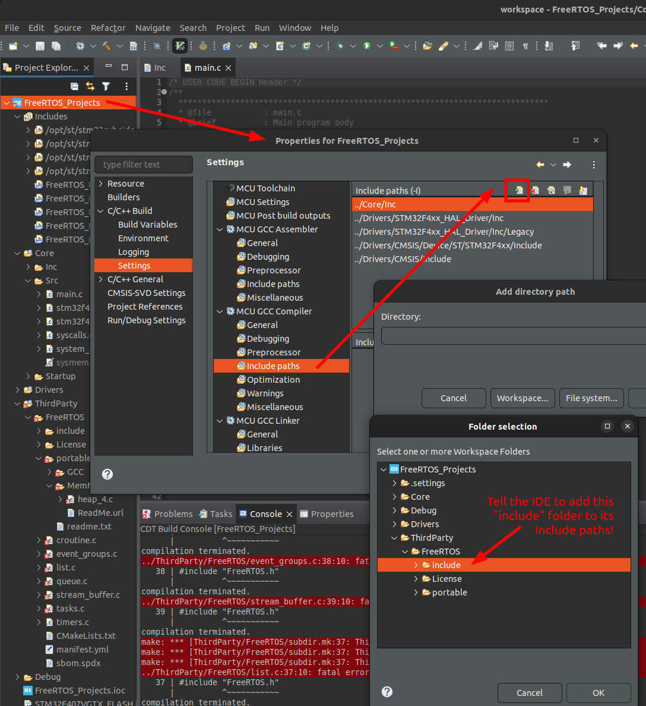
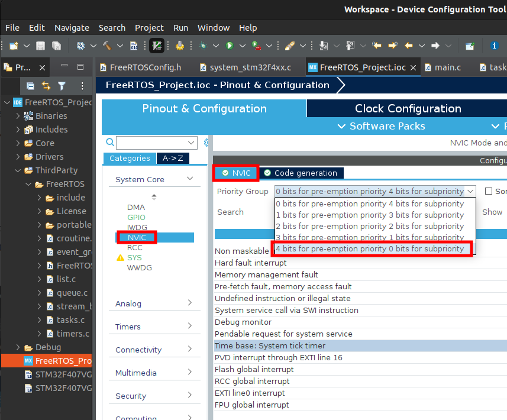

Home | Projects | Notes > Real-Time Operating Systems (RTOS) > Creating FreeRTOS Project
Creating FreeRTOS Project
Before moving on, create a root folder (e.g.,
RTOS/) that contains two folders for the following two contents:Workspace- contains project filesDownloads- contains software and toolchains
The FreeRTOS kernel version we will be using here is FreeRTOSv202012.00.
Creating FreeRTOS Project using CubeIDE
Create a project (e.g.,
Project) underWorkspace/inside the root folder.The project name can be renamed as necessary later on. To rename the project:
Rename your project from the STM32CubeIDE (In this step, the IDE will do some syncing)
Go to
Workspace/and rename the directory itself as wellCome back to the IDE and refresh the project (In this step, the IDE will notify you that the project has been deleted.)
Import the project to the IDE (Import
Note that this might not work as expected if this project is being version controlled using Git. Git will insert conflict markers to the renamed project files and you'll have to deal with it!
Create a project with the Targeted Project Type
STM32Cube. Do not selectEmptysince we are not writing bare-metal program. We want to explore FreeRTOS upon working MCU.If the CubeIDE asks you if you wanted to initialize peripherals
Why?
There could be peripherals (LCD, accelerometer, etc.) connected internally to some pins on your development board. For example, a sensor on your board that operates over I2C is connected to pins PB6 and PB7. If you choose to enable all peripheral in default mode, the IDE will configure the pins PB6 and PB7 for I2C to operate the sensor connected to these pins. The same is valid for other onboard peripherals as well.
Check your board's manual for clarification.
Integrating FreeRTOS
Two ways you can integrate FreeRTOS kernal into your project.
Manual (Without CMSIS RTOS API)
Automatic (With CMSIS RTOS API) - Using STM32Cube device configuration tool
The CMSIS-RTOS API is a generic RTOS interface for Arm® Cortex®-M processor-based devices. CMSIS-RTOS provides a standardized API for software components that require RTOS functionality and gives therefore serious benefits to the users and the software industry. https://www.keil.com/pack/doc/CMSIS/RTOS/html/genRTOSIF.html

Project layout
Application layer (
Project/Core/Src)CMSIS-RTOS API layer will not be used in our project.
FreeRTOS layer will be added.
CMSIS-CORE layer provides stadard APIs to access Cortex-M processor's basic peripherals. (
Project/Drivers/CMSIS/Include/core_cm4.h)

Create
ThirdParty/(Project/ThirdParty)Create
FreeRTOS/(Project/ThirdParty/FreeRTOS)This folder will contain the compiler information we will be using (i.e., GCC), FreeRTOS kernel source (architecture independent + architecture dependent)
Copy
License/from the downloaded kernel source folder intoProject/ThirdParty/FreeRTOS.Copy the FreeRTOS kernel source (the contents of the
Source/not the folder itself) intoProject/ThirdParty/FreeRTOS.portable/contains architecture-dependent part of the FreeRTOS kernel.Everything else is architecture-independent.
Go to
Project/ThirdParty/FreeRTOS/portable, delete everything butGCC/,MemMang/,readme.txt.Under
GCC/ARM_CM4F/(i.e., ARM Cortex-M4 with FPU support) are two filesportmacro.handport.c. These are port codes or architecture-level codes that are necessary to run the FreeRTOS on a specific target hardware architecture.Go to
Project/ThirdParty/FreeRTOS/portable/GCC, delete all the that are not your hardware architecture. (In our case, leaveARM_CM4F/only! Trailing 'F' means "with FPU").This is architecture-dependent part of the FreeRTOS kernel.
ThirdParty/folder properties setting - Uncheck "Exclude resource from build"

Do the followings going through the
Project/Core/Srccontents.main.c- contains the application codestm32f4xx_it.c- contains exception handlersstm32f4xx_hal_msp.c- contains device initialization code for different peripheralssysmem.c- contains heap managment code but will NOT be used in our project since FreeRTOS provides its own heap management code (i.e.,FreeRTOS/portable/MemMang/heap_x.c)Feel free to exclude
sysmem.cfrom build. Also, exclude or deleteheap_1.c,heap_2.c,heap_3.c,heap_5.c, and just keepheap_4.c. (Recommend deleting the rest of theheap_x.cfiles to avoid hassle later.)syscalls.c- contains standard library system calls such as__write(),__read(), etc.
Include paths setting - Now that you've added new folders that include header files needed for the project, you need to tell the IDE where to look for those header files when building the project.
Add to the "Include paths" the following two paths:
Project/ThirdParty/FreeRTOS/include/Project/ThirdParty/FreeRTOS/portable/GCC/ARM_CM4F/(Architecture specific header files)

Create the
FreeRTOSConfig.hfile which contains the FreeRTOS kernel configuration information. It is a configuration header file used to customize the FreeRTOS kernel. This file is application-specific so does not come with the FreeRTOS kernel download. You need to create it and added it to the project on your own. (Reference: https://freertos.org/a00110.html)FreeRTOSConfig.halso contains architecture-specific configuration items so one for a project will not work for a different architecture.For the time being, we will import a configuration file from a demo proejct provided by the freertos.org for different microcontrollers. Search for your microcontroller (e.g., stm32f407) in
Downloads/FreeRTOSv202012.00/FreeRTOS/Demo/and copy the correspondingFreeRTOSConfig.hfile intoProject/ThirdParty/FreeRTOS/. The one provided for the same microcontroller (stm32f407 in our case) should work.Don't forget to add its path
Project/ThirdParty/FreeRTOS/to the "Include paths"!FreeRTOSConfig.hexample: It is basically a C header file (.h) with bunch of configurable definitions.Note that some configurations are processor-dependent (Interrupt nesting behaviour configuration) and this is why a
FreeRTOSConfig.hfile for one processor architecture may not be used for a different architecture.xxxxxxxxxx1101/* FreeRTOSConfig.h example */23456/* Here is a good place to include header files that are required across7your application. */891011121314151617181920212223242526/* Deprecated! */272829303132333435363738/* Memory allocation related definitions. */39404142434445/* Hook function related definitions. */4647484950515253/* Run time and task stats gathering related definitions. */5455565758/* Co-routine related definitions. */59606162/* Software timer related definitions. */636465666768/* Interrupt nesting behaviour configuration. */6970717273/* Define to trap errors during development. */747576/* FreeRTOS MPU specific definitions. */7778/* Default value. */79/* Default value. */80/* Default value. */8182838485/* ARMv8-M secure side port related definitions. */868788/* Optional functions - most linkers will remove unused functions anyway. */8990919293949596979899100101102103104105106107108/* A header file that defines trace macro can be included here. */109110/* FREERTOS_CONFIG_H */If a configuration item is set to 0, the corresponding code block will not be included when generating the FreeRTOS kernel.
At this point, you will be left with a couple of build errors. At the time wring this notes, I had to do the following modification to resolve
'SystemCoreClock' undeclarederror.xxxxxxxxxx71/* FreeRTOSConfig.h - BEFORE modification */23/* Ensure stdint is only used by the compiler, and not the assembler. */456extern uint32_t SystemCoreClock;7Section only defined for IAR compiler. However, we'll be using GCC compiler. So let's allow multiple compilers.
xxxxxxxxxx71/* FreeRTOSConfig.h - AFTER modification */23/* Ensure stdint is only used by the compiler, and not the assembler. */456extern uint32_t SystemCoreClock;7__ICCARM__- IAR compiler__GNUC__- GCC compiler__CC_ARM- ARM's native compilerNext errors left were caused by redefinition of
SVC_Handler,PendSV_Handler,SysTick_Handler. These are defined in bothProject/ThirdParty/FreeRTOS/portable/GCC/ARM_CM4F/port.candProject/Core/Src/stm32f4xx_it.c(Actual#definefor these handlers were found inProject/ThirdParty/FreeRTOS/FreeRTOSConfig.h).Solution is to remove those definitions of redefined handlers from
stm32f4xx_it.cbecause this file is what CubeIDE generated for us for our convenience and is not project specific. We need to use the handlers defined inport.c.Use "Device Configuration Tool" to remove them. (Of course you can remove it manually from the code, but when you've selected to use Device Configuration Tool, it is not suggested for probable conflicts.)
Then, save and regenerate the code!

The last errors left were fixed by turning off
configUSE_TICK_HOOK,configUSE_MALLOC_FAILED_HOOK, andconfigCHECK_FOR_STACK_OVERFLOW. (Set their#definevalues to 0.)Build success!
Timebase Source Selection
FreeRTOS uses ARM Cortex-M processor's internal SysTick timer as its timebase (RTOS ticking).
STM32 Cube HAL layer also by deafult uses SysTick timer as its timebase source.
If you are using both FreeRTOS and STM32 Cube HAL layer in your project, there will be a conflict in using a timebase source.
To resolve this, it is strongly recommended that you
USe SysTick timer for FreeRTOS only
Use any other timer peripheral of the microcontroller than SysTick Timer for STM32 Cube HAL layer
Open "Device Configuration Tool",
SYS
NVIC
In ARM Cortex-M processors, the hardware priority is implemented using 4 bits. (These 4 bits can be divided into sub priority but let's not use subpriority at this point.)


Then, Project
Successful if
stm32f4xx_hal_timebase_tim.chas been generated underSrc/. This file initializes the TIM6 (Timer 6) to generate time base every 1 ms.Build success?
Other Things to Note
When you update settings by using "Device Configuration Tool", CubeIDE will regenerate your code. So, it is important that you insert your code only within the section where it says:
xxxxxxxxxx31/* USER CODE BEGIN XXX */23/* USER CODE END XXX */Any code written outside these sections may get wiped out by the code generation engine of the IDE!
References
Nayak, K. (2022). Mastering RTOS: Hands on FreeRTOS and STM32Fx with Debugging [Video file]. Retrieved from https://www.udemy.com/course/mastering-rtos-hands-on-with-freertos-arduino-and-stm32fx/